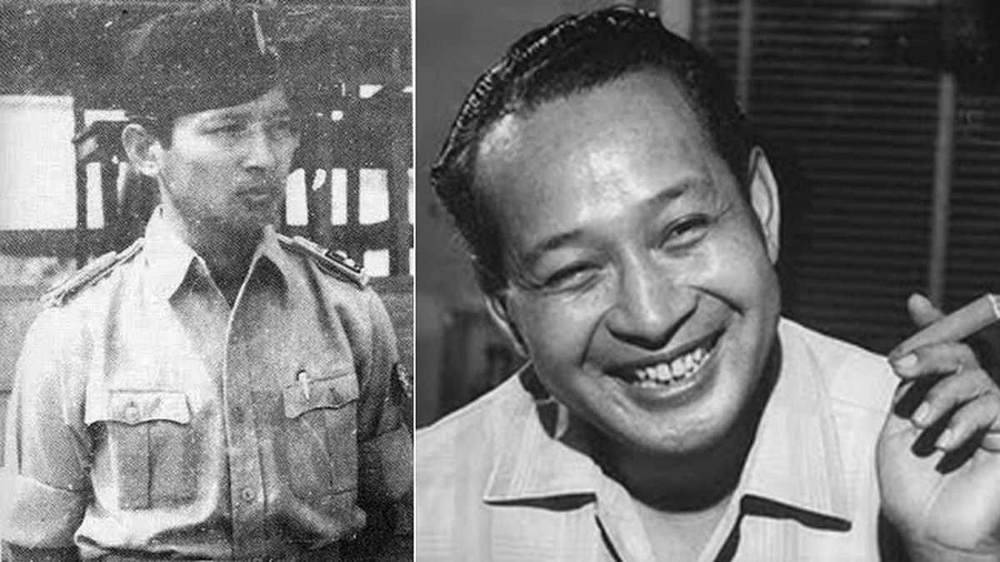
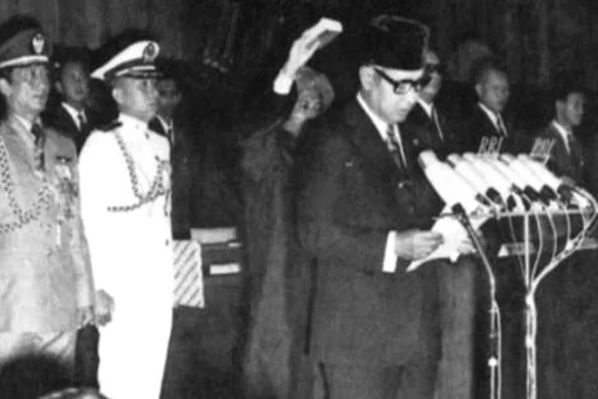
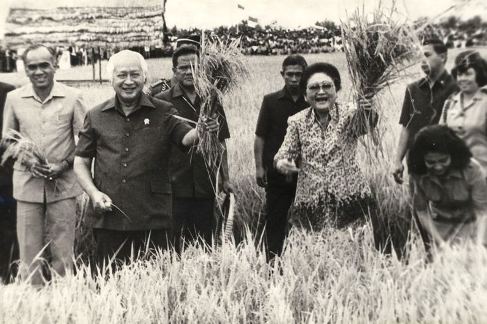
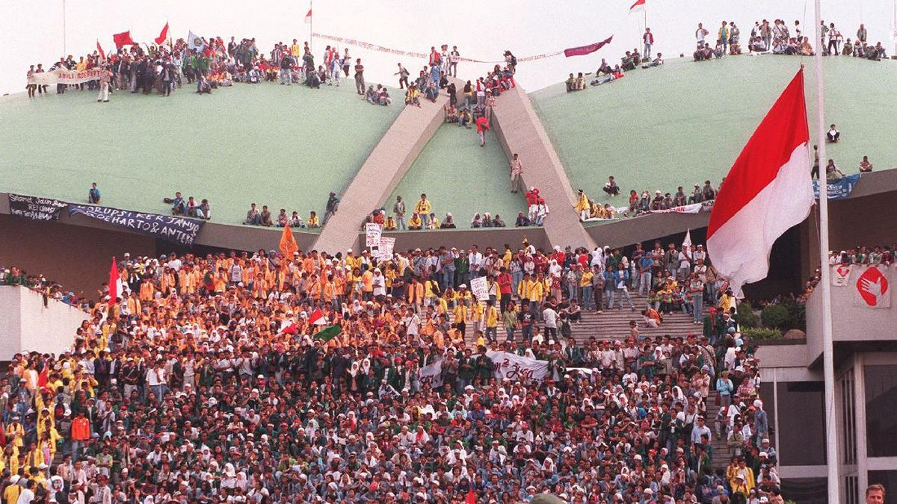

Latar Belakang

Soeharto lahir pada 8 Juni 1921 di Dusun Kemusuk, Yogyakarta, dari sebuah keluarga petani yang
sederhana. Masa kecil hingga remajanya banyak diwarnai dengan perpindahan tempat tinggal untuk
menempuh pendidikan dasar. Perjalanan panjangnya di dunia militer berawal pada tahun 1940 ketika
ia memutuskan untuk bergabung dengan tentara Hindia Belanda (KNIL).
Seiring pergantian masa penjajahan, ia kemudian beralih masuk ke dalam satuan PETA bentukan
Jepang. Pasca-proklamasi kemerdekaan, dedikasinya di militer berlanjut dengan bergabung ke
dalam Tentara Keamanan Rakyat (TKR), di mana ia kelak memainkan peran taktis dalam upaya
mempertahankan kemerdekaan, salah satunya melalui keterlibatan aktif dalam peristiwa
bersejarah Serangan Umum 1 Maret 1949.
Era Orde Baru

Kiprah Soeharto di puncak kepemimpinan nasional bermula dari terbitnya Surat Perintah Sebelas
Maret (Supersemar) pada tahun 1966, yang menjadi titik awal transisi kekuasaan dari Presiden
Soekarno kepadanya. Era pemerintahannya yang kemudian dikenal luas sebagai Orde Baru, memiliki
fokus utama pada penciptaan stabilitas politik dan percepatan ekonomi melalui program Rencana
Pembangunan Lima Tahun (Repelita).
Di bawah arahannya, pembangunan infrastruktur digenjot secara masif di berbagai pelosok
daerah. Salah satu puncak pencapaian terbesar pada masa pemerintahannya terjadi pada era
1980-an, di mana Indonesia berhasil mengubah statusnya dari negara pengimpor beras menjadi
negara yang sukses mencapai swasembada pangan, sebuah prestasi monumental yang secara resmi
diakui dan diberi penghargaan oleh organisasi pangan dunia (FAO) pada tahun 1984.
Warisan & Kontroversi
Selama lebih dari tiga dekade memegang kendali pemerintahan Republik Indonesia,
Soeharto meninggalkan jejak sejarah yang sangat kompleks. Era kepemimpinannya yang panjang
tidak hanya mengubah wajah infrastruktur dan ekonomi bangsa, tetapi juga mewariskan berbagai
catatan kelam yang membekas hingga saat ini. Sosoknya tak lepas dari dua sisi mata uang yang
selalu memicu perdebatan: antara pencapaian besar dalam pembangunan nasional dan tingginya
harga yang harus dibayar demi stabilitas negara.
Warisan

Dalam catatan sejarah, Soeharto diakui atas perannya dalam membawa stabilitas ekonomi
pasca-gejolak krisis di pertengahan 1960-an. Melalui program Rencana Pembangunan Lima
Tahun (Repelita), ia berhasil menekan angka inflasi yang sempat meroket dan membangun
infrastruktur fisik secara masif di berbagai pelosok daerah. Salah satu keberhasilan
utamanya yang paling diakui dunia adalah pencapaian swasembada pangan pada tahun 1984.
Lompatan besar ini membuat Indonesia sempat mandiri dalam produksi beras dan membuahkan
penghargaan resmi dari Organisasi Pangan dan Pertanian Dunia (FAO). Rentetan pencapaian
di bidang infrastruktur dan ekonomi inilah yang mengukuhkan gelarnya sebagai
"Bapak Pembangunan Indonesia".
Kontroversi

Di balik gemerlap kemajuan ekonomi, sistem pemerintahan Orde Baru menyimpan sisi bayangan
yang terus menjadi sorotan. Stabilitas politik yang diklaim pemerintah sering kali diraih
dengan mengorbankan kebebasan berpendapat masyarakat dan membatasi ruang gerak pers.
Selain itu, masa kepemimpinannya dikritik tajam atas maraknya praktik Korupsi, Kolusi, dan
Nepotisme (KKN) yang mengakar kuat di berbagai sektor, serta rentetan dugaan pelanggaran
Hak Asasi Manusia (HAM). Puncak dari akumulasi krisis kepercayaan ini meledak pada tahun
1998, ketika hantaman krisis moneter Asia melumpuhkan perekonomian nasional, memicu
kerusuhan, dan melahirkan gelombang demonstrasi mahasiswa besar-besaran yang memaksanya
mundur dari kursi kepresidenan pada 21 Mei 1998.